任务一：HW4 数据可视化总览
数据来源为 work4/hw4_20260614 下的 student.csv、course.csv、sc.csv、汇总表和质量快照。本页用于完成“数据的可视化”任务，并为后续异常发现、成绩/课程特征分析和相似分析提供入口。
图中红色高亮为本组 18 组；提交规模参考值为 student=150、course=30、sc=750。
任务拆解
| 序号 | 任务 | 当前处理方式 |
|---|---|---|
| 1 | 数据的可视化 | 已完成本报告：覆盖 student、course、sc 三张表的规模、字段分布和基础成绩画像。 |
| 2 | 异常数据发现 | 后续可从数量偏差、缺失成绩、异常组号、字段写法不一致继续深入。 |
| 3 | 成绩与课程特征分析 | 可基于本报告的成绩/课程图，继续做均分、及格率、学分学时与课程共享关系分析。 |
| 4 | 相似分析 | 可用各组的规模、院系比例、成绩分布、课程画像构建组间相似度。 |
| 5 | 报告整理 | 汇总各任务图表、方法和结论，形成最终实验报告。 |
数据概览
student 总量
3929
course 总量
1002
sc 总量
22287
成绩缺失/占位
5667
18 组 student
150
18 组 course
30
18 组 sc
750
18 组数值成绩均分
82
1. 提交规模与院系结构
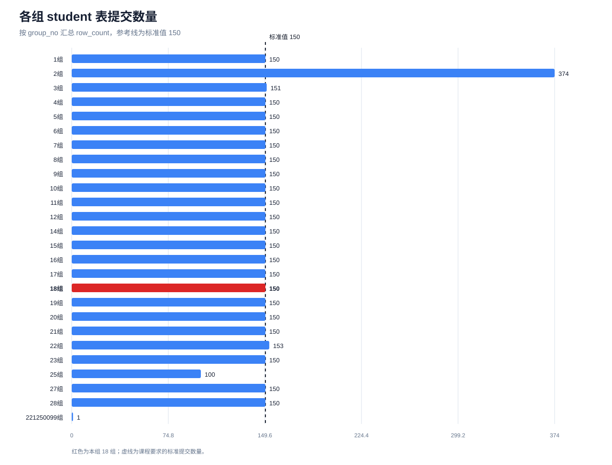
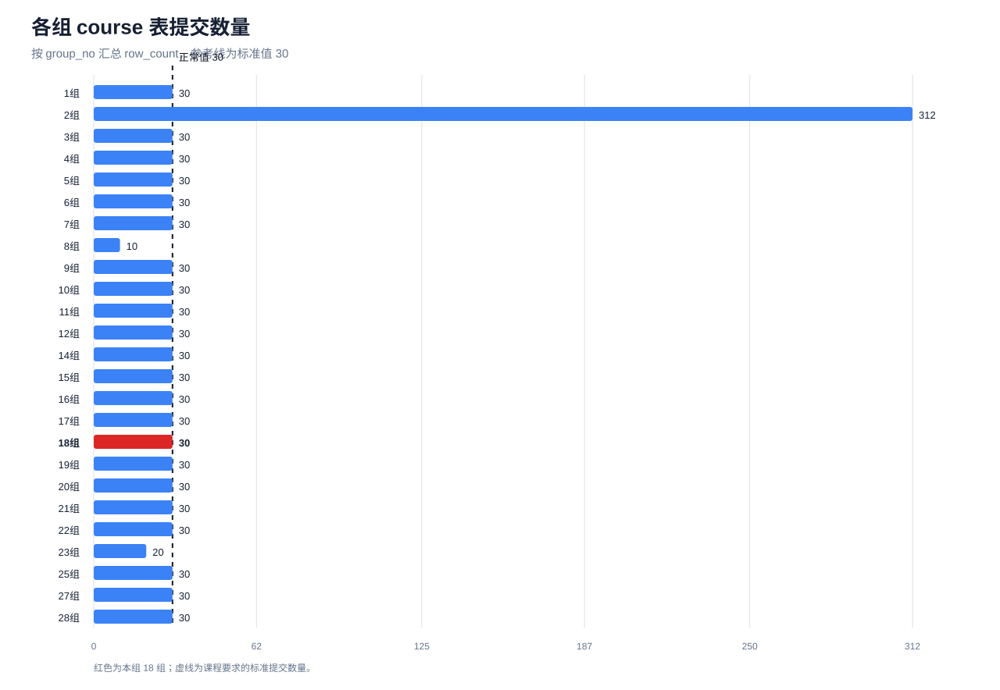
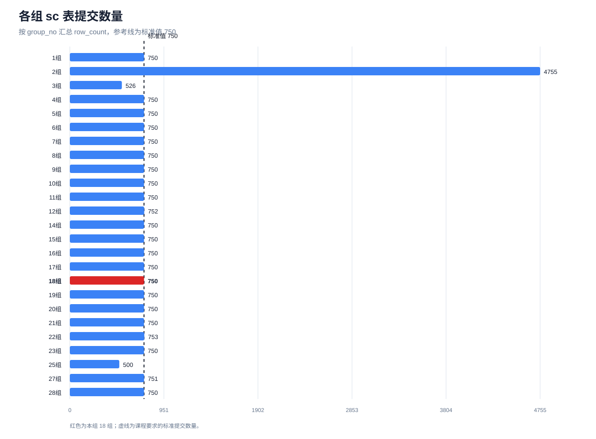
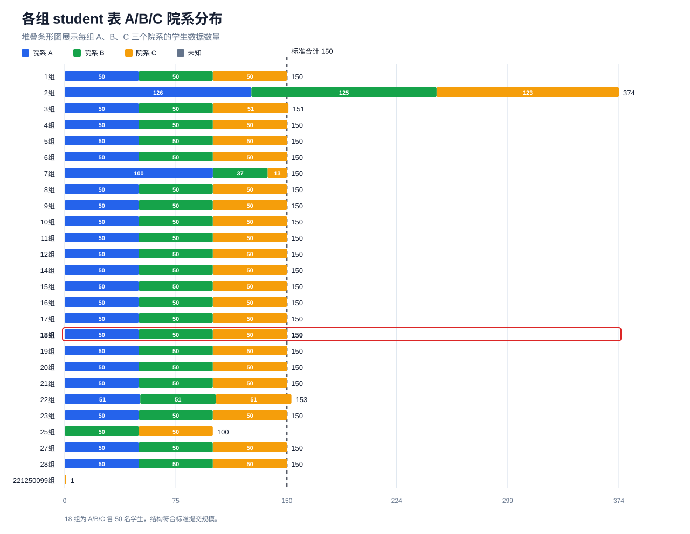
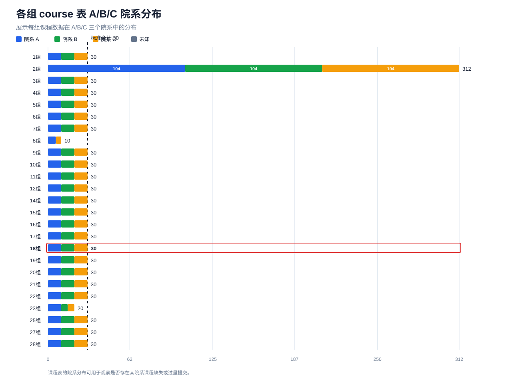
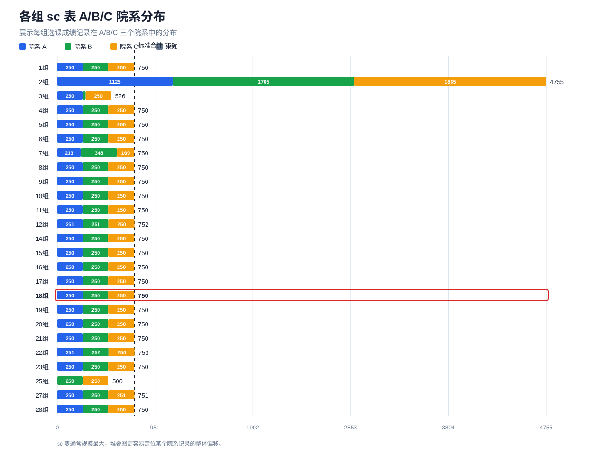
2. 学生数据画像
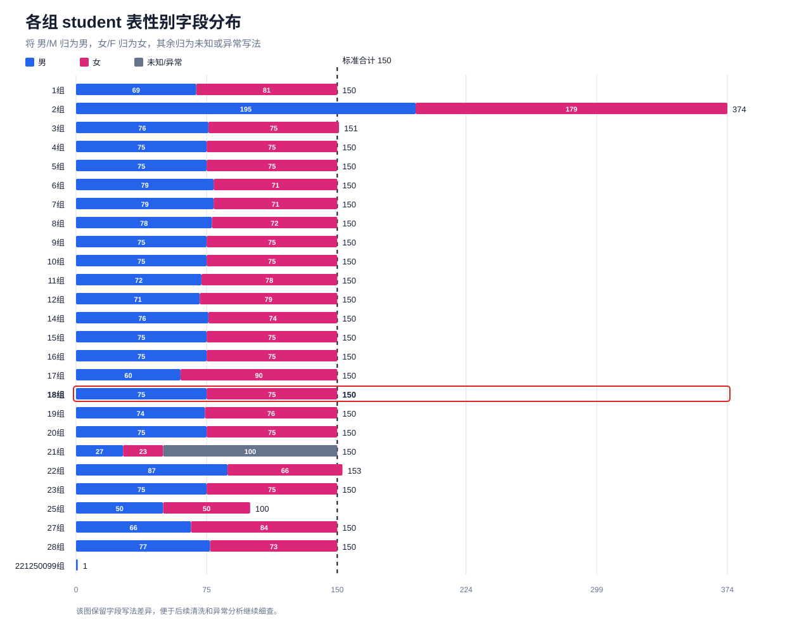
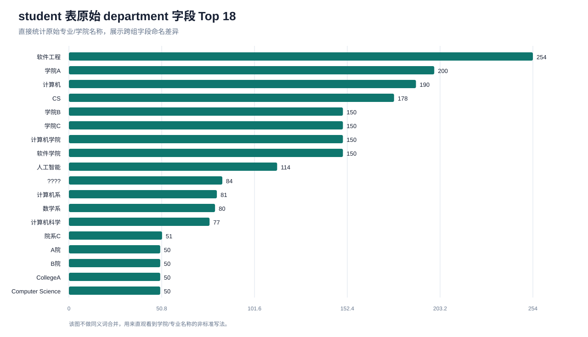
3. 课程数据画像
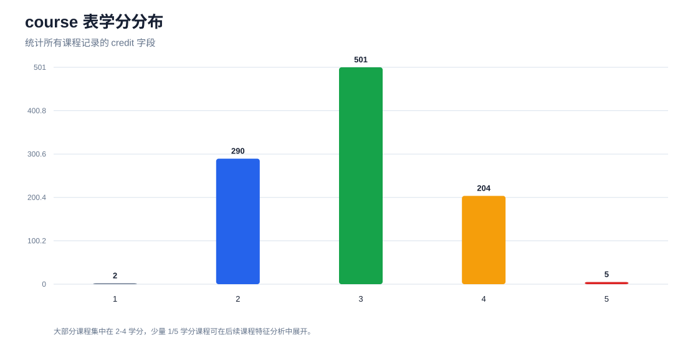
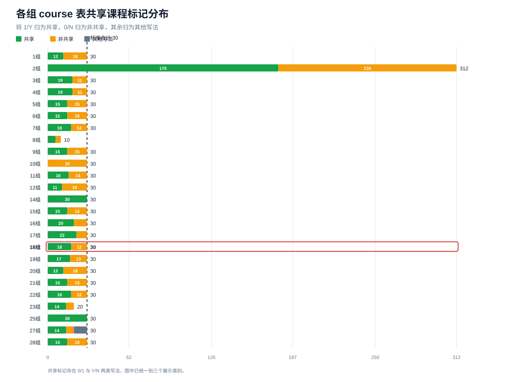
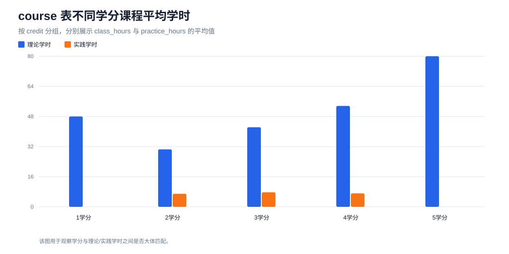
4. 成绩数据画像
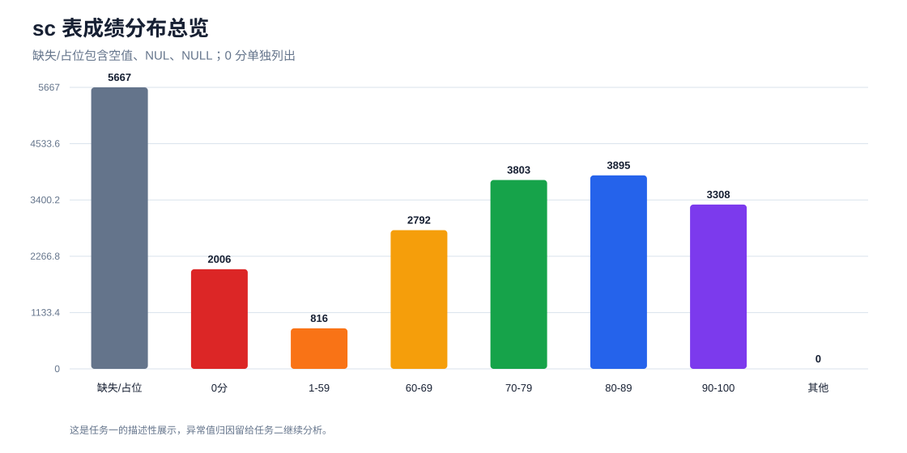
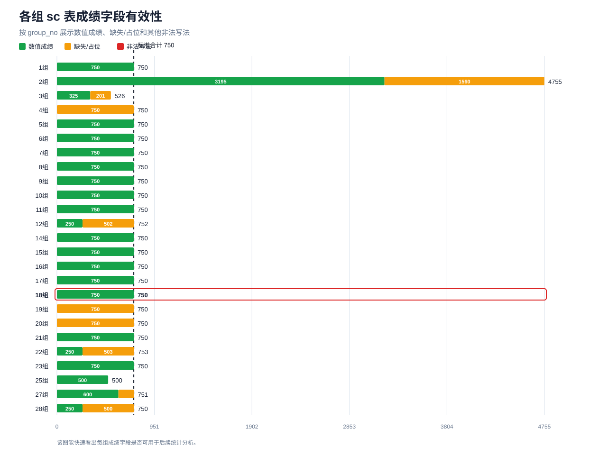
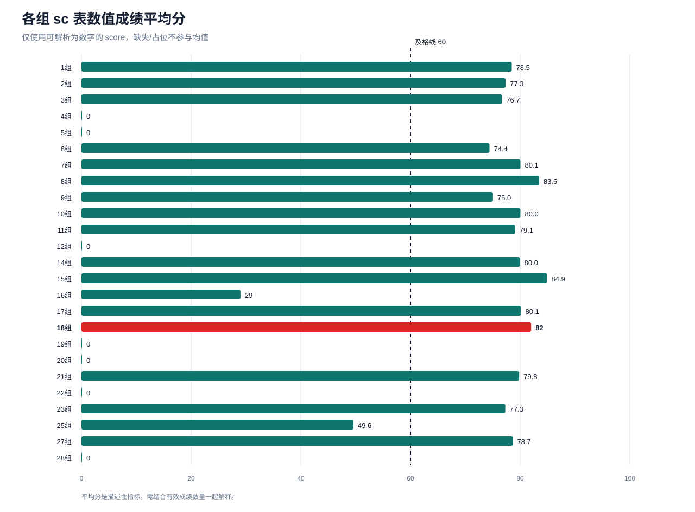
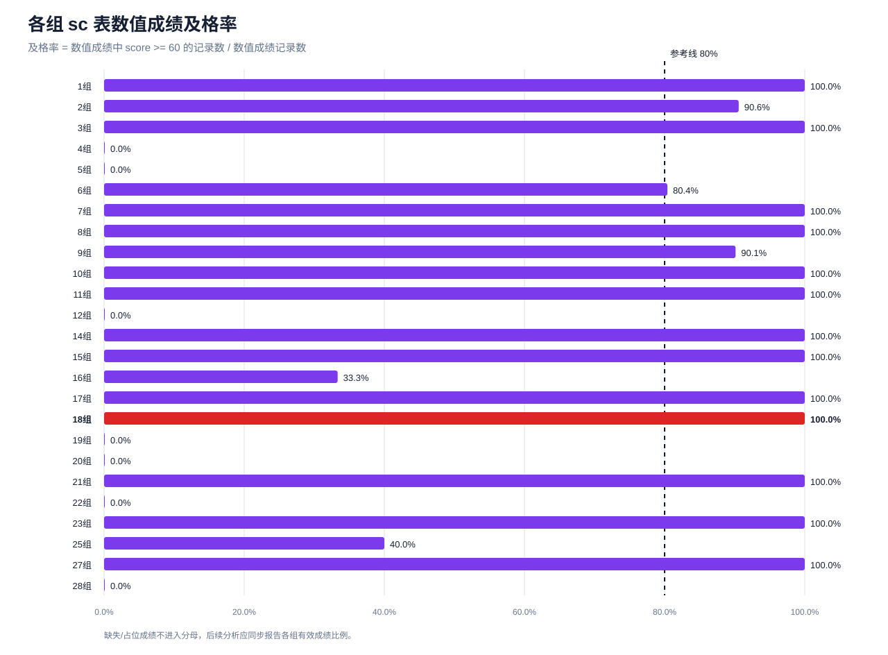
可写入报告的简短说明
本次可视化覆盖三张原始数据表：从提交规模看，本组 18 组 的 student/course/sc 数量分别为 150、30、750，符合标准提交规模；从结构看，student/course/sc 均可按 A/B/C 院系继续观察分布。
字段层面，student 表的 gender 和 department 存在多种写法；course 表的 share_flag 同时出现 0/1 与 Y/N 写法；sc 表中共有 5667 条成绩为空值、NUL 或 NULL，占位成绩需要在后续异常数据发现中重点解释。完整数量偏差明细见 distribution_deviations.csv。